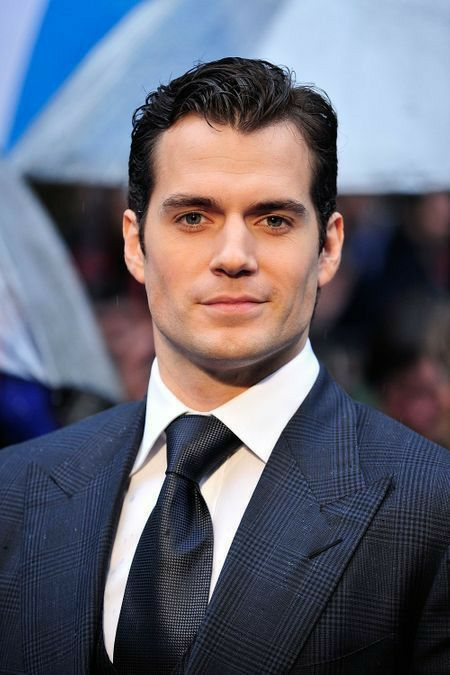
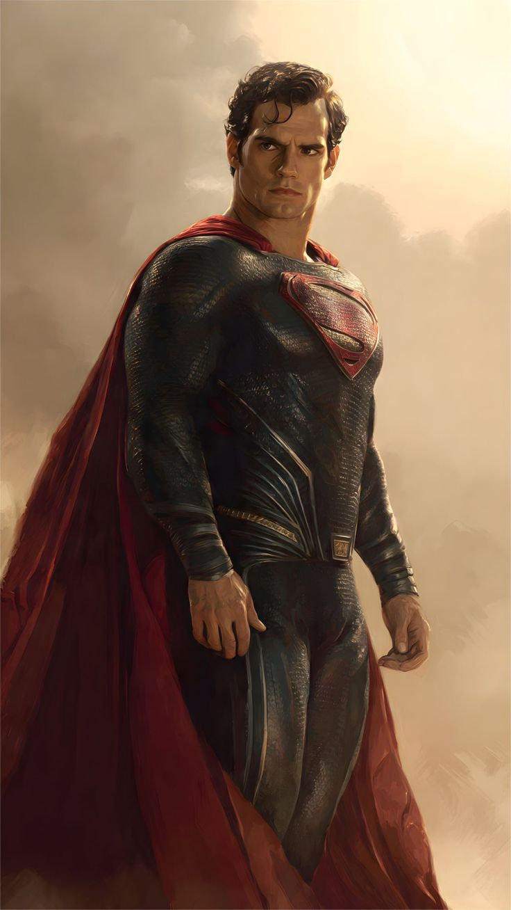
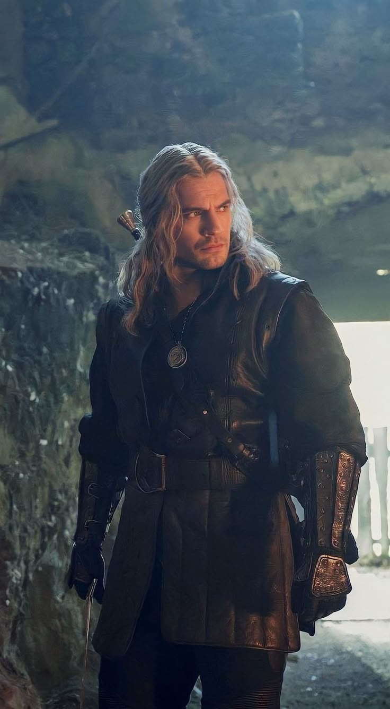
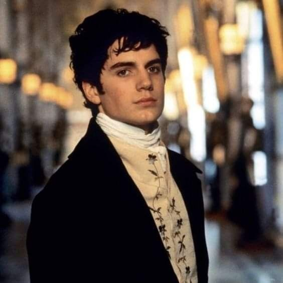
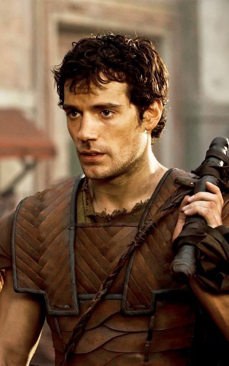

Stage 01
Early Years
Cavill's earliest professional work came through stage and early screen appearances, including period television and supporting film roles that allowed him to develop his craft outside the mainstream spotlight.
A Tribute To
The Man Behind the Legends
An actor known for bringing iconic characters to life with intensity, discipline and understated charisma.

The Man Behind the Characters
Born in 1983 on the island of Jersey, Henry Cavill grew up in the Channel Islands before pursuing acting as a serious ambition from a young age. His British roots and disciplined upbringing would go on to shape a career defined as much by patience as by talent.
He began working steadily in television and film during the early 2000s, taking on a range of supporting and period roles that allowed him to build his craft outside the spotlight. That groundwork gradually gave way to larger international opportunities.
Over time, Cavill became known not only for his screen presence but also for the seriousness with which he approaches physically demanding roles, often undertaking rigorous preparation to meet the demands of his characters.
"Every role is an opportunity to disappear into someone else's story."
— Editorial tribute line, not an attributed quotationFrom Aspiration to Icon
From early screen work to becoming one of the most recognizable actors of his generation, Cavill's path was gradual, deliberate, and built role by role.
Cavill's earliest professional work came through stage and early screen appearances, including period television and supporting film roles that allowed him to develop his craft outside the mainstream spotlight.
Through a series of increasingly prominent film and television roles, Cavill's profile grew steadily and earned him wider recognition.
Cavill's casting as Clark Kent and Superman marked a defining turning point in his career. Man of Steel introduced him to a global audience and established him as one of the era's most recognizable screen superheroes.
His portrayal of Geralt of Rivia in The Witcher became one of his most widely recognized performances, combining physical transformation with a grounded approach to a demanding fantasy role.
Cavill continued to diversify his work across genres, including Mission: Impossible – Fallout, Enola Holmes, Argylle, and The Ministry of Ungentlemanly Warfare.
Roles That Defined an Era

Man of Steel
A portrayal that established Cavill as one of the most recognizable modern actors to play the iconic superhero.
Learn More →
The Witcher
A physically demanding fantasy role that introduced Cavill to a massive global streaming audience.
Learn More →
Mission: Impossible – Fallout
A powerful action role that showcased his physicality and commanding screen presence.
Learn More →
Enola Holmes
A different interpretation of the legendary detective, revealing a lighter side of his acting range.
Learn More →A Selected Filmography

The Count of Monte Cristo
2002
Stardust
2007

Immortals
2011
Man of Steel
2013

The Man from U.N.C.L.E.
2015

Batman v Superman: Dawn of Justice
2016
Mission: Impossible – Fallout
2018
Enola Holmes
2020

Argylle
2024

The Ministry of Ungentlemanly Warfare
2024

The Tudors
2007

Night Hunter
2018
In the Grey
2026
Highlander
Upcoming
The Journey
1983
Henry Cavill is born on the island of Jersey in the Channel Islands.
2001
Begins his professional screen career and takes his first steps into acting.
2007
Takes on a prominent role in the historical drama series The Tudors.
2011
Stars in the mythological action film Immortals.
2013
Takes on the role of Clark Kent and Superman in Man of Steel.
2018
Appears as August Walker in one of his most memorable action performances.
2019
Begins his run as Geralt of Rivia in Netflix's The Witcher.
2020
Plays Sherlock Holmes in the Netflix film Enola Holmes.
2024
Makes a cameo appearance connected to the Superman universe in Deadpool & Wolverine.
Why He Stands Out
01
A distinctive screen presence that makes even quiet moments memorable.
02
Known for the rigorous preparation required for demanding roles.
03
From superheroes and fantasy warriors to spies and detectives.
04
A strong commitment to understanding and embodying his characters.
A Tribute
"More than the characters he played, it is the dedication behind them that made Henry Cavill memorable."
Beyond the Screen
A curated selection of moments. Click any image to view it in full screen.
Use ← → to navigate, or press Esc to close